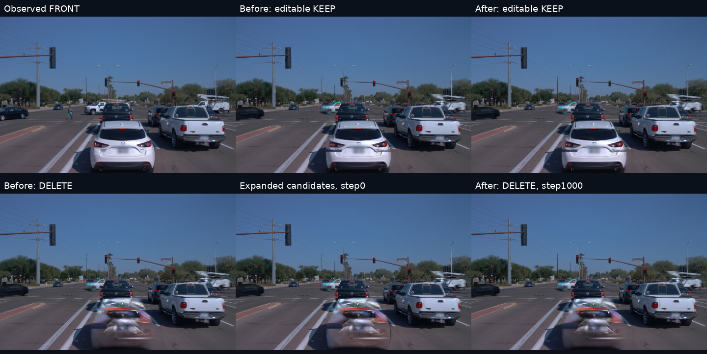
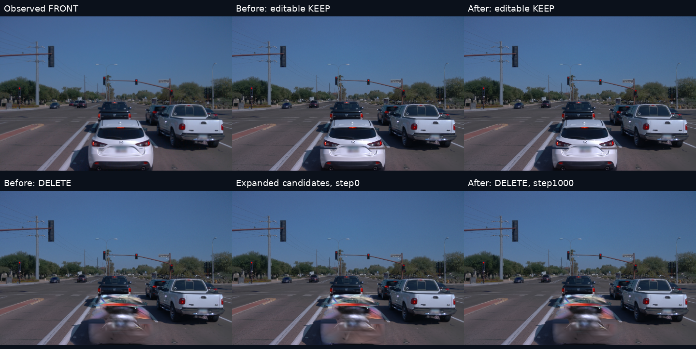

通用v44修复 · scene-065白色轿车重跑 · 2026-11-11
保持与候选覆盖错误已修复，干净删除仍未通过
共享代码不含针对065的条件。完整目标轮廓已退出错误保持约束，候选覆盖已扩展；重跑后道路代理误差略降，但第119、198帧仍有明显车形残影和彩色横带。旧结果、原生30K、初始化渲染与新结果均保留。
实际新旧对照

FRONT，第119帧。上排：实拍、修复前保留、修复后保留；下排：修复前删除、扩展候选后的零更新初始化、正式1000步后删除。曝光和画幅一致，初始化不是学习效果。
第198帧同一对照

修改的是共享规则
| 环节 | 修复内容 | 边界 |
|---|
| 目标保持域 | 从显式实例标签与完整删除集合得到目标并集，在完整目标域关闭原画面保持与额外范围外保持。 | 其他车辆和标线优先保护，冲突单独记录。 |
| 候选覆盖 | 候选支持从有参考的拟合域扩展到“原拟合域 ∪ 完整目标域”；候选与保护在全部BUILD视角统计，构造后固定。 | 无参考只表示可被纳入候选，不创建道路真值或透明度清零损失。 |
| 实例与输入绑定 | 按当前完整删除集合重算其余车辆保护；验证参考视图、删除底图、模型和帧文件映射一致。 | 换目标须准备对应BUILD参考和底图，不能只替换旧编号。 |
| 完整恢复 | 检查点绑定实际实例掩码与策略源码；候选构建视角和有参考的优化采样视角分开。 | 本轮保持原seed、步数、学习率、参考和采样顺序。 |
通用代码提交 01e029c7 已推送。纯NumPy策略通过18项测试，包括任意分辨率、身份重编号、多目标、目标缺席、范围外目标、保护冲突和非法输入。这里验证代码可复用；本轮正式渲染仅重跑065，不称多场景画质通过。
覆盖修复已在真实渲染核验
候选从45,449增加到76,861，新增31,412行，旧候选丢失0。全部199帧中，目标错误keep/left为0，非冲突目标轮廓全部进入候选支持域。第119帧范围外静态贡献可由已选候选控制的比例，旧诊断为23.74%，新结果为97.02%。这确认覆盖缺口得到修正，但不等于新增候选已经恢复了正确表面。
| 帧 | 目标域静态贡献来自已选候选 | 范围外目标静态贡献来自已选候选 |
|---|
| 60 | 83.10% | 81.75% |
| 119 | 98.59% | 97.02% |
| 150 | 98.79% | 97.41% |
| 198 | 98.97% | 97.73% |
本轮没有扩张道路参考或添加生成背景：21个道路参考／几何字段完全一致，199帧photo权重与投影参考逐像素一致。新增候选中的31,365行未超过原有参考支持阈值，参考缺口仍然存在。
数值变化与实际限制
前两行为删除结果与原有BUILD道路参考的线性RGB代理MAE，不是独立无车真值；后三行为保留结果与参与训练的实拍RGB误差，数值空间不同。多个区域可重叠。标线保护域仅705像素帧，不能代表全场标线验收。
有实拍支持域代理误差约下降6.0%，推断域约下降7.8%。其他车辆新旧保留RGB平均变化为8.96×10⁻⁶，目标外为8.90×10⁻⁵；可见道路保留误差和白车保留误差略升，不能写成无损。已直接查看119/198原始PNG：车形、横带和下部块状痕迹仍在，未达到干净删除。
训练与展示合同
原生高斯、环境、归属和道路不训练。只重新拟合1000步静态不透明度乘子：32步保存、完整状态恢复、余下968步，新增工程优化更新0；原1000步采样序列逐项一致。初始logit仍为2，对应0.880797乘子，候选数增加也改变了原mean正则的分母；因此另存零更新初始化，避免把初始化衰减算作优化收益。
原平台已安装五列：实拍／原生30K／修复前删除／修复后保留／修复后删除；199帧同步拖动和两段完整视频。原四列、10K/20K/30K、历史编辑及旧记录都保留。原生30K和scene-029未改。398张原PNG、两段H264视频及来源清单已取回核验，39项实际JS/DOM替身检查通过；没有冒称浏览器UI验收。
证据与复跑入口
完整候选／保持域统计 · 真实贡献与参考一致性 · 全部199帧指标 · 预算与采样合同 · 完整状态恢复 · sol6.1 max独立审阅 · 页面安装记录
远端运行目录 /root/autodl-tmp/drivingeditor_repro/campaign/waymo_val065_handoff_fix_20261111_r1，完整检查点、float输出及冻结runtime保留；旧根目录 waymo_val065_delete30k_20261109_r1 不变。源码与构建器在source/。task WAYMO-V44-HANDOFF-FIX-20261111，沿用V82-F06，human_verdict=null。AutoDL保持开机。